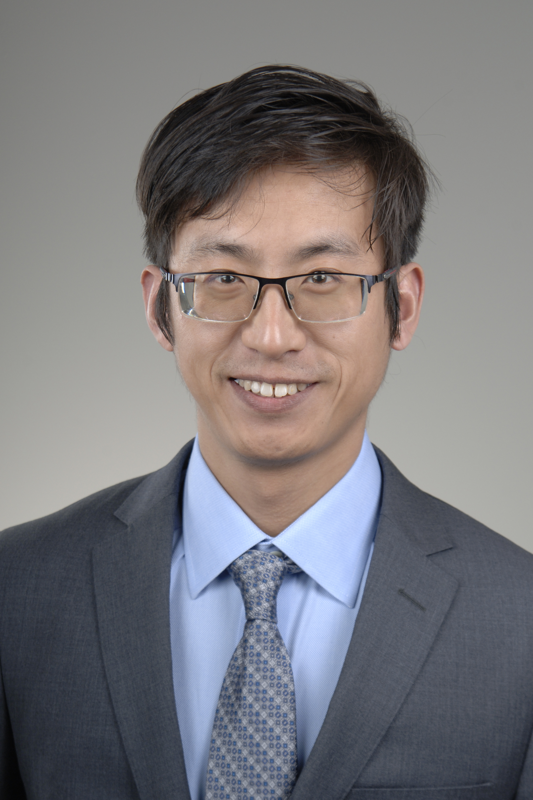
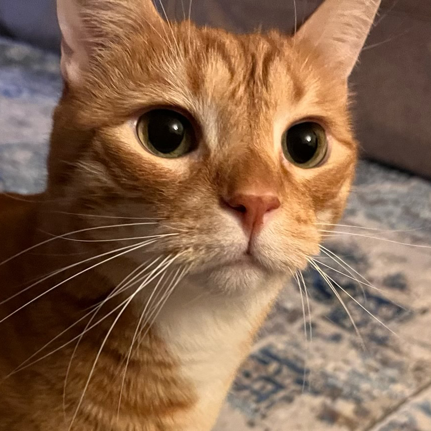
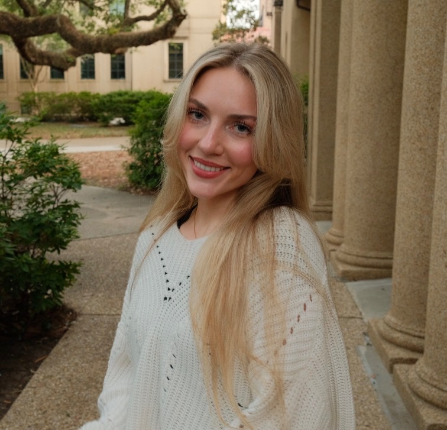
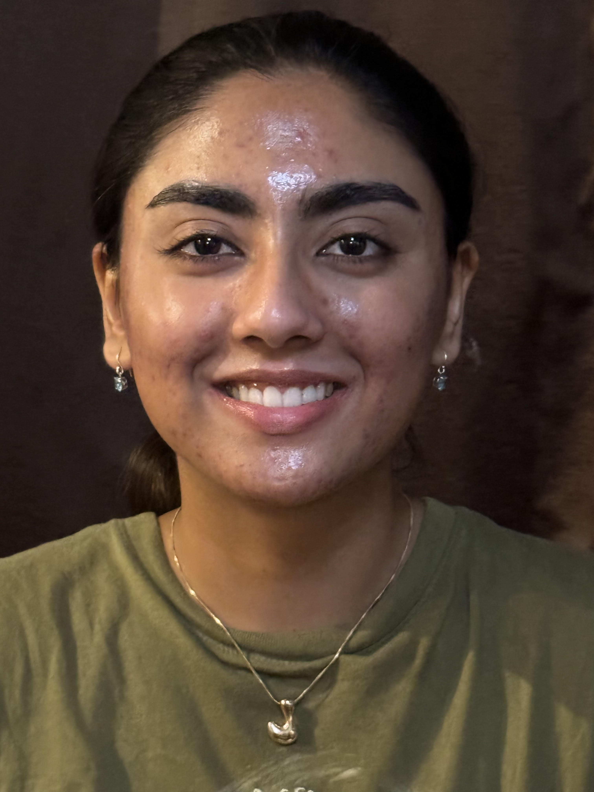
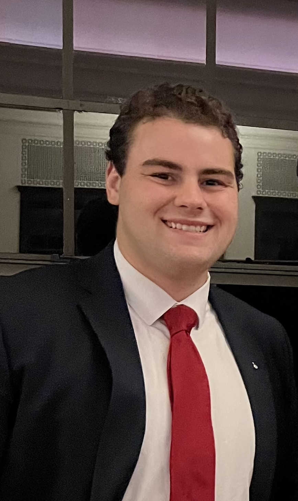
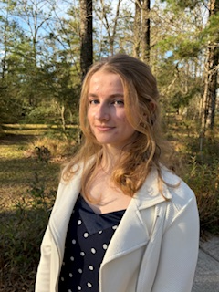
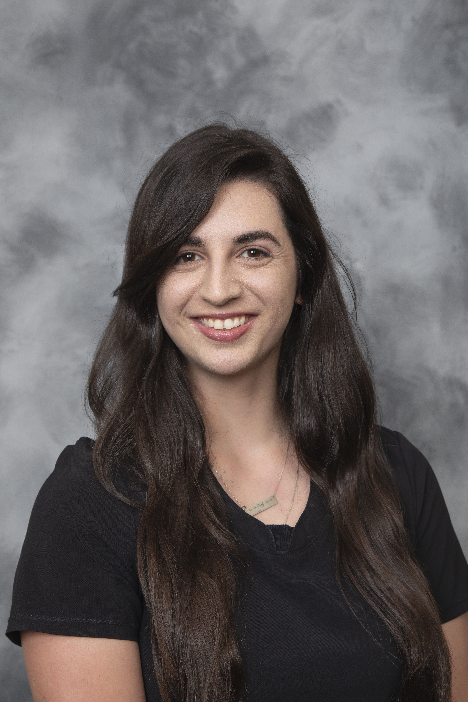

Dr. Shang Su
Assistant Professor
Principal Investigator (PI)

Mr. Guantou, CEO
Chief Entertainment Officer
Chief Efficiency Officer
Be PAWsitive!

Dr. Lin Liu, MD
Research Associate

Ms. Yuxiu Ao
PhD student

Ms. Abby Guidry
Undegraduate Researcher

Ms. Laya Selvaraj
Undegraduate Researcher

Mr. Joseph Zimmermann
Undegraduate Researcher

Ms. Emma Collett
Undegraduate Researcher

Ms. Kristi Bell
Veterinary Student
LSU Tiger
Come join us!
Alumni-Thanks for your contributions!
-
All the best to the talents who have spent their efforts in Su lab! We wish you all the best!
Alumni ranked by their family names (A to Z)
Ms. Kaitlyn Perkins, Volunteer Undergraduate (2025.02-2025.05), LSU, Baton Rouge, LA.
Mr. Abeeb Oyesiji, Summer visiting scholar (2025.06-2025.08), PhD student in Southern University, Baton Rouge, LA.
Join us!
-
We are constantly seeking highly motivated postdocs,
PhD students and undergraduate students,
to join our multidisciplinary efforts in cancer research!
Together, we are dedicated to contributing biomedical basic knowledge and improving patient care.
Please contact Dr. Shang Su to discuss your research interests.